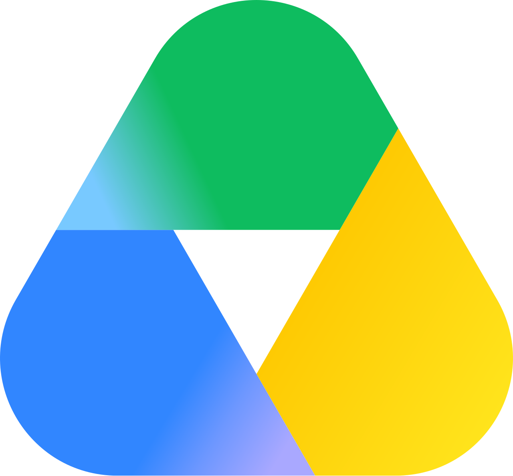

Modelar también con IA: Claude + Blender
Del texto al modelo 3D listo para simular — cero líneas de código a mano
📝
Instrucción en lenguaje natural
"Crea un brazo 6-DOF con gripper paralelo"
Claude (LLM)
interpreta · razona · genera código
🔌
MCP Server — Blender
execute_blender_code( script )
Blender ejecuta bpy
eslabones · joints · masas · fricción
📦
Modelo 3D + URDF
robot_arm.urdf → Isaac Lab / ROS 2
Demostración real
· brazo generado por instrucciones de texto
Un agente, muchas herramientas:

Prototipado: de
semanas
→ a
horas